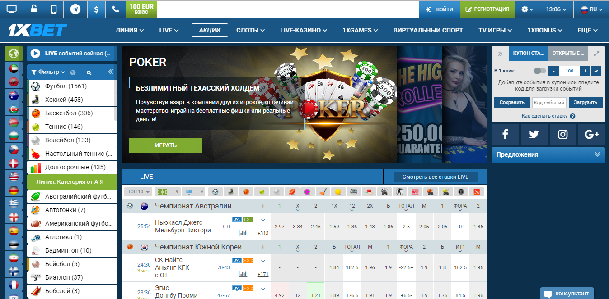
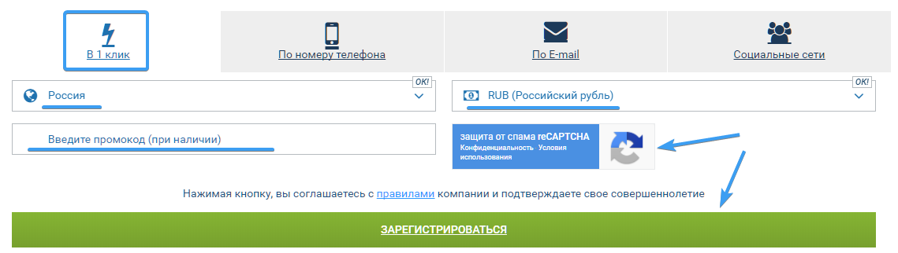
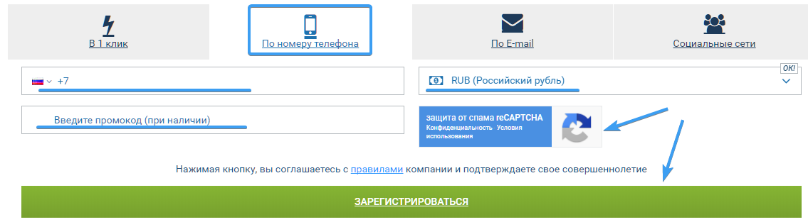

1 х бет зеркало на сегодня

Актуальное и рабочее зеркало 1xBet позволяет делать ставки на спорт без каких-либо проблем со стороны интернет-провайдера. Если вы уже зарегистрированы на официальном сайте 1xBet, то зеркало позволит вам продолжить игру под своим аккаунтом, не создавая новый. Если же у вас еще нет своего игрового аккаунта, то далее вы узнаете как зарегистрироваться на сайте 1хБет.
Быстрая регистрация
При выборе этого способа вам нужно лишь удостовериться в том, что выбрана нужная страна и валюта. Логин и пароль для входа в букмекерскую контору будут сгенерированы автоматически.
С помощью электронной почты
Это расширенная форма регистрации, которая потребует от вас:
- Адрес проживания
- Фамилию и имя
- Пароль
- Почтовый адрес
- Номер телефона для связи
По номеру телефона
Здесь вам потребуется только указать номер телефона, на который СМС-сообщением вам вышлют данные для входа на сайт.

Через социальные сети
Этот метод позволяет вам привязать свой аккаунт на сайте к аккаунту одной из доступных соц. сетей и в дальнейшем использовать аккаунт соц. сети для входа. Этот процесс должен быть вам знаком, т.к. данный метод используется на большинстве популярных веб-сайтов ввиду своего удобства.

Преимущества 1xBet
Скорость работы
В первую очередь это можно понять по наличию Live-режима. Помимо этого, сам сайт моментально отображает все матчи, результаты по ним и другую информацию.
Поддержка устройств
1xBet доступен на любых устройствах, будь то мобильный телефон, планшет, ноутбук или ПК.
Предоставление статистики
1xBet предоставляет детальную статистику матчей и ставок, в том числе в виде графиков, что даёт возможность понять ситуацию и сделать правильную ставку.
Данная букмекерская контора позволяет пополнить счёт или вывести деньги любым удобным для вас способом, будь то электронный кошелёк, счёт мобильного телефона или банковская карта.
Отзывчивая тех. поддержка
Тех. поддержка 1xBet поможет вам разрешить любое затруднение во время пользования сайтом. Они действуют оперативно и находятся онлайн в режиме 24/7
1xBet удваивает ваше первое пополнение после регистрации. Единственное ограничение здесь - сумма не должна превышать 5000 рублей. Это быстрый старт для новичков.
Правила регистрации
-
необходимо достигнуть возраста совершеннолетия
-
в системе можно иметь только один игровой аккаунт
-
запрещено использовать различное ПО для автоматизации ставок
-
запрещено играть «вилками». Будут срезаны лимиты
Напоминаем вам, что и наш сайт запрешён для просмотра лицам не достигшим возраста совершеннолетия. Если вам не исполнилось 18 лет или вы не осознаёте риск финансовых потерь от ставок на игры, просим вас покинуть данный сайт.
Способы ввода и вывода
У букмекера 1хбет присутствует огромное количество способов пополнения: начиная от электронных кошельков, и заканчивая банковскими переводами.
Бонус при первом пополнении счёта
Зеркало 1хбет дарит каждому новому игроку до 5000 рублей на баланс счета при первом пополнении. Хотите удвоить свой первый взнос? Тогда регистрируйтесь прямо сейчас по ссылке ниже